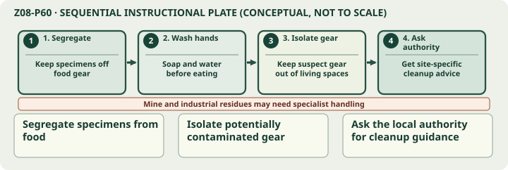

Z08-P60 · Rocks, minerals and materials · New manuscript
Heavy-Metal Dust Hygiene and Post-Field Decontamination
Prevent secondary ingestion or household transfer of lead, arsenic, silica, and soil contaminants after geological fieldwork.
When it applies · End-of-day cleanup after soil, clay, gravel, or mineral observation trips.
Equipment · Soap, clean water, dedicated specimen bags (only where lawful), separate laundry bag.

Actions
- Wash hands and forearms thoroughly with soap and clean water after handling rocks, soil, clay, or wood ash—always before eating, drinking, or touching your face.[R12, R14]
- Keep field boots, rock hammers, and dusty packs out of living and kitchen areas, rinsing mud outdoors away from drinking-water wells.[R06, R12, R14]
- Store any lawfully collected educational geological specimens labeled in sealed containers away from food surfaces and young children.[R14, R19]
Failure recognition · Eating trail snacks with mineral-dusted hands or washing dusty fieldwork clothes with family linens transfers lead, arsenic, and silica indoors.[R06, R12, R14]
Verify · Hands are washed before food contact, dusty gear stays segregated from kitchens, and labeled specimens remain out of child reach.[R12, R14]
Stop or change course · Stop field handling and contact Poison Control (1-800-222-1222) if a child mouths an unidentified mineral or metallic ore.[R14, B09]
Evidence and editorial notes
- B09 · Minnesota Poison Control System · Poison Help 1-800-222-1222 and Regional Plant/Mushroom Guidance (Current web edition)
- Section: Minnesota Poison Control 1-800-222-1222 immediate referral · Conditions: Any suspected toxic plant, berry, root, or mushroom ingestion or severe dermal exposure
Support: Call 1-800-222-1222 immediately (or 911 for breathing difficulty, collapse, seizures, or altered alertness); do not wait for delayed symptoms.
Limitations: Never induce vomiting or administer home remedies unless explicitly instructed by Poison Control or EMS. · Conflicting evidence: None noted.
Editorial note: Mandatory Z05 poison-response escalation. · Specialist reviewer: Clinical toxicologist / Poison Center
Primary source · checked 2026-11-25 - R06 · NIOSH / CDC · Crystalline Silica Respiratory Dust Hazards (2024)
- Section: Crystalline silica dust respiratory hazard · Conditions: Any grinding, hammering, knapping, or crushing of quartz, chert, sandstone, or granite
Support: Fracturing or abrading silica-bearing stone generates respirable crystalline silica dust linked to silicosis and lung disease.
Limitations: Outdoor breeze does not eliminate breathing-zone dust; avoid dry grinding/crushing and use eye and respiratory protection in authorized instruction. · Conflicting evidence: None noted.
Editorial note: Mandatory Z08 silica/eye safety gate. · Specialist reviewer: Industrial hygienist and geologist
Primary source · checked 2026-11-25 - R12 · U.S. EPA · Protect Your Family from Lead in Soil and Dust (2025)
- Section: Soil contamination and urban/industrial lead hazards · Conditions: Soils near historic structures, roadways, mines, or industrial sites
Support: Soils and clays near older painted structures, smelters, tailings, or roadways may harbor lead or industrial contaminants.
Limitations: Visual texture or color cannot detect lead, arsenic, or chemical contaminants; do not use unverified soil/clay for cookware or food contact. · Conflicting evidence: None noted.
Editorial note: Separates clay plasticity checks from chemical safety. · Specialist reviewer: Environmental health and soil scientist
Primary source · checked 2026-11-25 - R14 · USGS · National Minerals Information Center and Mineral Commodities (Current web edition)
- Section: Metallic ores, sulfides, and heavy-metal mineral toxicity · Conditions: Unidentified metallic-luster minerals, tailings, or bright oxidized crusts
Support: Sulfide ores and metallic minerals can contain lead, arsenic, mercury, or copper compounds hazardous via dust or hand-to-mouth transfer.
Limitations: Do not taste, lick, burn, or process unidentified metallic or brightly crusted minerals; wash hands after handling. · Conflicting evidence: None noted.
Editorial note: Blocks hazardous mineral extraction/handling. · Specialist reviewer: Geochemist and toxicologist
Primary source · checked 2026-11-25 - R19 · USGS · Collecting Rocks: Rock Classes and Mineral Property Basics (USGS GIP)
- Section: Specimen documentation, scale, and locality recording · Conditions: Documenting geological specimens for reference or museum review
Support: Recording locality, host formation, metric scale, fresh vs weathered surface, and non-destructive traits preserves scientific value.
Limitations: A photograph or hand sample without locality and scale rarely permits definitive identification of fine-grained rocks. · Conflicting evidence: None noted.
Editorial note: Defines Z08 specimen voucher protocol. · Specialist reviewer: Curatorial geologist
Primary source · checked 2026-11-25
Source lineage · New manuscript (Z08 P16 toxicity hygiene) · Classification · New manuscript.